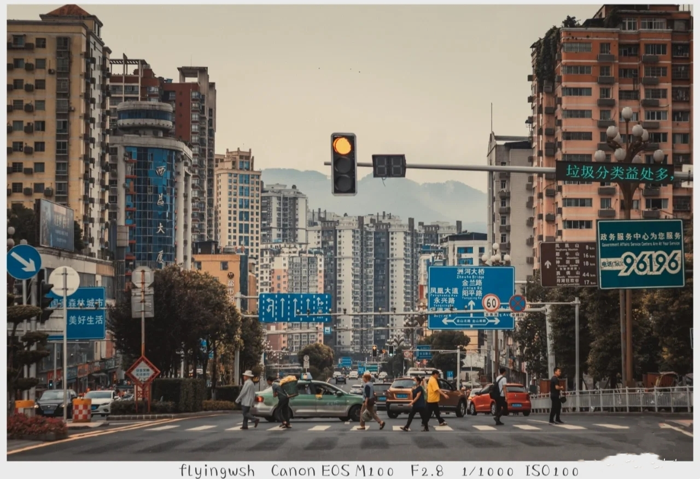
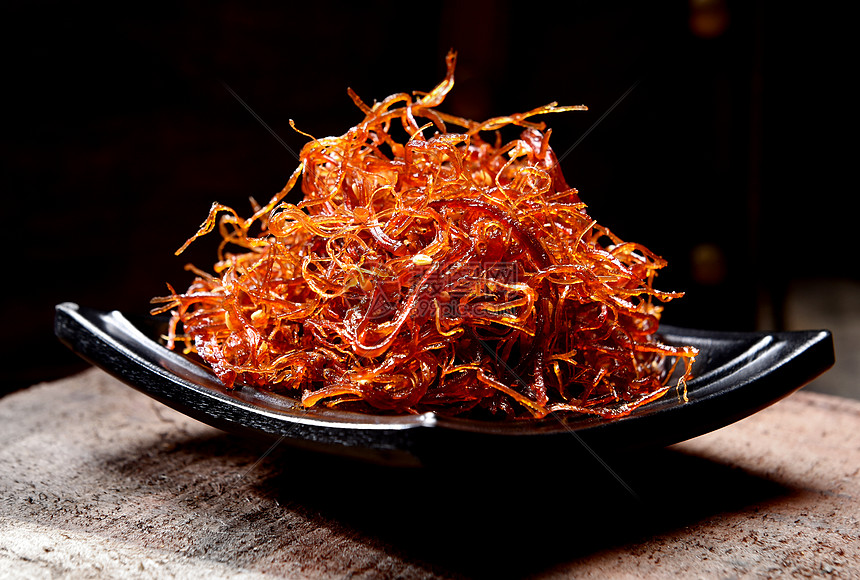
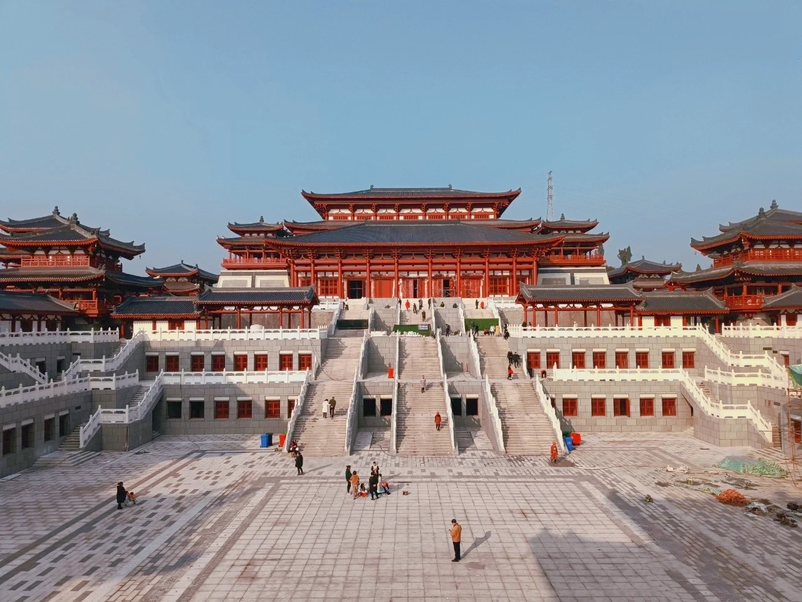

四川.达州
城市简介
达州市，别称通州、绥定、巴渠、中国圆心城，四川省辖地级市，中国西部天然气能源化工基地，川渝鄂陕结合部交通枢纽、 文化商贸中心和生态宜居区域中心城市,截至2019年,全市下辖2个区、4个县、代管1个县级市,幅员面积1.66万平方公里。
历史文化
巴人遗址、渠县城坝遗址和汉阙群、开江任市陶牌坊堪称我国古代文化瑰宝，均属国家重点文物保护单位。 特别是巴文化古老厚重, 尤以宣汉罗家坝遗址为盛,距今3700—4700年历史,与成都金沙遗址、广汉三星堆齐名,是巴人历史的见证,达州英才辈出。
城市美食
达州菜发展初期以“尚滋味、好辛香”为特点，中期则以“物无定味，适口者珍”为特色。明末，辣椒传入，风味特点逐渐定型， 近代以“一菜一格，百菜百味，清鲜醇浓，麻辣鲜香”为风格，江湖菜、大碗菜为代表，善用泡椒与酸菜（盐菜）调味。 当代达州菜形成四大风格：传统菜、江湖菜、风味菜、新派菜。
旅游景点
今日之达州，云蒸霞蔚。达州有着悠久的历史文化，文化气息厚重，人杰地灵，资源丰富。在达州人们将自然景观和人文景观融于一体， 集历史文化、巴人文化、红军文化、三国文化、民俗民间文化、企业文化于一身，是古巴国巴人文化的发源地，有“巴人故里”美誉。